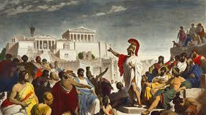

History
One of the most used government systems today is democracy. It allows people to actively participate in activities and make the right decisions for their own future! Many laws have been added and changed greatly over the years, but the concept of democracy is mostly unchanged.
Athenian Democracy

The first known kind of democracy was invented in the polis of Athens, Greece. Previously, the city was ruled by archons and rich people. They followed an oral law until Solon made it so that the law was being regulated by a court.
During his reign, Solon also gave the free citizens of Attica the right to participate in assembly meetings. Through this, he reshaped the social framework of the government. This gave opportunities for people to voice out their opinions and allowed the court to see things from different perspectives.
Democracy temporarily reverted to tyranny under Peisistratos, but was returned after his son Hippias was expulsed. Cleisthenes united all people under one rule regardless of status or wealth. He made the traditional tribes politically irrelevant and established 10 new tribes instead.
The third set of reforms was instigated by Ephialtes. While many were assisting the Spartans in war, he reduced the power of the Aeropagus to judging crimes like cases of homicide instead.
Democratic regimes continued until Athens surrendered to Sparta and they were under the control of the so-called Thirty Tyrants. After a year, they gradually shifted back to democracy until their downfall to the Macedonians led by Phillip II